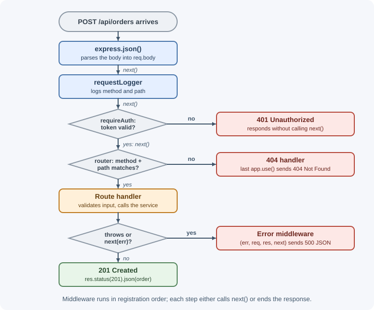
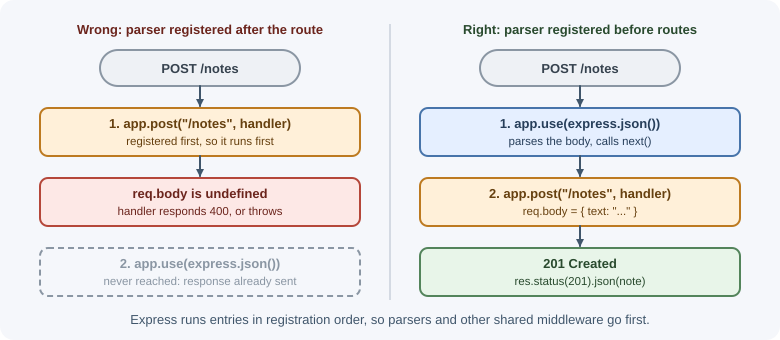
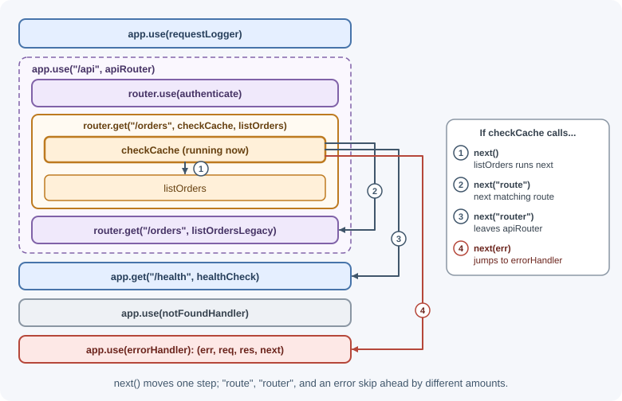

Middleware¶
Middleware is reusable request-processing code that runs between receiving a request and sending a response. In Express, a middleware function can inspect or change the request, do a task such as logging, end the response itself, or pass control to the next function in line. Express applications are essentially chains of middleware with route handlers at the end.
Why it matters¶
Many routes need the same cross-cutting behavior: parsing request bodies, recording request details, checking authentication, setting security headers, or measuring response time. Middleware lets you write that behavior once and apply it to the whole app, one router, or a single route, instead of copying it into every handler. Understanding the order in which middleware runs is the key to understanding why an Express app behaves the way it does.
Real-world usage¶
- Stripe warns Express users that the order of middleware decides
whether webhook verification works. Its documentation says the webhook
route must come before
app.use(express.json()), because "Express applies middleware in order" and a JSON parser that runs first changes the body before the signature check (Stripe documentation). - Auth0 protects Express APIs with middleware: its
express-oauth2-jwt-bearerSDK is configured as JWT middleware that validates access tokens before protected route handlers run (Auth0 Express API quickstart). - Sentry's Express integration "captures errors from your routes and middleware automatically" and skips errors with 3xx and 4xx status codes by default, treating them as expected client errors (Sentry for Express).
- PayPal built kraken.js as "a convention layer on top of express" so that many teams configured their apps the same way, after finding that plain Express "didn't scale well in multiple development teams" (PayPal Technology blog).
Popular tools and providers: helmet, cors, morgan, pino-http,
compression, and express-rate-limit from npm, plus vendor middleware
from identity and monitoring providers such as Auth0 and Sentry.
How it works¶
The signature¶
function middleware(req, res, next) {
// 1. Do some work with req / res
// 2. Then EITHER send a response OR call next()
next();
}
reqandresare the same objects for every function in the chain, so data attached by one middleware (req.user) is visible to later ones.nextpasses control to the next matching middleware or route.- If a middleware neither responds nor calls
next(), the request hangs until the client times out.
The middleware chain¶
Express runs middleware in registration order. Each request walks down the list until something sends a response.

Because order matters, a middleware registered after a route never runs for requests that route answers.

Ways to call next¶
| Call | Effect |
|---|---|
next() |
Continue to the next matching middleware or route |
next("route") |
Skip the remaining handlers of the current route (route handlers only) |
next("router") |
Leave the current router and continue after it |
next(err) |
Skip normal middleware and jump to error-handling middleware |
Any value other than "route" or "router" passed to next() is treated
as an error.

Types of middleware¶
Application-level middleware is registered on app:
app.use(requestLogger); // every request
app.use("/admin", requireAdmin); // paths starting with /admin
app.get("/profile", authenticate, getProfile); // one route
app.use("/admin", fn) matches /admin, /admin/users, and so on, but
not /administrator. Inside fn, req.url has the mount path removed.
Router-level middleware is registered on an express.Router() and
runs only for requests that reach that router:
const router = express.Router();
router.use(authenticate); // every route in this router
router.get("/orders", listOrders);
app.use("/api", router);
Built-in middleware ships with Express:
| Middleware | Purpose |
|---|---|
express.json() |
Parse JSON bodies into req.body |
express.urlencoded() |
Parse HTML form bodies |
express.raw() |
Keep the body as a Buffer |
express.text() |
Parse plain-text bodies into a string |
express.static(dir) |
Serve files from a folder |
Third-party middleware is installed from npm:
| Package | Purpose |
|---|---|
cors |
Send CORS headers; see configuring CORS |
helmet |
Set security headers; see security best practices |
morgan |
HTTP request logging |
cookie-parser |
Parse cookies into req.cookies |
compression |
Compress response bodies |
express-rate-limit |
Limit repeated requests |
multer |
Parse multipart/form-data uploads |
Error-handling middleware has four parameters. Express recognizes it
by the number of arguments, so all four must be declared even if next
is unused:
app.use((err, req, res, next) => {
console.error(err);
res.status(err.status ?? 500).json({ error: "Something went wrong" });
});
It runs only when an error is passed with next(err) or thrown, and it
must be registered after the routes. See
error handling in Express.
A typical registration order¶
app.disable("x-powered-by");
app.use(helmet()); // 1. security headers on every response
app.use(cors(corsOptions)); // 2. CORS (also answers preflight)
app.use(requestId); // 3. tag the request for logs
app.use(requestLogger); // 4. log it
app.use(express.json({ limit: "100kb" })); // 5. parse bodies
app.use("/api/v1", apiRouter); // 6. routes (with their own auth)
app.use(notFoundHandler); // 7. nothing matched -> 404
app.use(errorHandler); // 8. errors -> one consistent response
Configurable middleware: the factory pattern¶
When middleware needs options, write a function that returns a
middleware. Most packages (cors(options), express.json(options)) work
this way.
function requireRole(...allowedRoles) {
return (req, res, next) => {
if (!req.user) return res.status(401).json({ error: "Sign in first" });
if (!allowedRoles.includes(req.user.role)) {
return res.status(403).json({ error: "Not allowed" });
}
next();
};
}
app.delete("/users/:id", authenticate, requireRole("admin"), deleteUser);
Async middleware in Express 5¶
Express 5 handles middleware and handlers that return promises. If the
promise rejects (for example an await throws), Express passes the error
to the error handler for you.
app.use(async (req, res, next) => {
req.settings = await loadSettings(); // a rejection reaches the error handler
next();
});
In Express 4 the same code produces an unhandled promise rejection that
Express never sees. Since Node.js 15, an unhandled rejection crashes the
whole process by default, taking every in-flight request with it; with an
unhandledRejection listener that keeps the process alive, the request
hangs instead. Express 4 code therefore wraps async functions in
try/catch and calls next(err), or uses a helper wrapper.
When to use and when not to use¶
Write it as middleware when:
- The same step applies to many routes: authentication, logging, request IDs, security headers, rate limiting, body parsing.
- The step must run before the handler and may end the request early, such as rejecting an invalid token with 401.
- The step prepares shared data for later handlers, such as loading
req.user.
Keep it out of middleware when:
- It is business logic for one feature, such as calculating an order total. Put it in a service the handler calls, so it can be tested without HTTP.
- It is expensive and most requests do not need it. A database lookup in global middleware also runs for health checks and static files.
- It depends on the result of the handler. Use the
finishevent or the handler itself instead.
| Scope | Register with | Use for |
|---|---|---|
| Whole application | app.use(fn) |
Security headers, CORS, request IDs, logging |
| Path prefix | app.use("/admin", fn) |
Rules for one area of the app |
| One router | router.use(fn) |
Authentication for a group of related routes |
| One route | app.get(path, fn, handler) |
Validation or permission checks for that route only |
| Errors | app.use((err, req, res, next) => ...) last |
Turning failures into one response format |
Practical examples¶
Request ID¶
import { randomUUID } from "node:crypto";
export function requestId(req, res, next) {
// Reuse an ID set by a trusted proxy, or create one
req.id = req.get("X-Request-Id") ?? randomUUID();
res.set("X-Request-Id", req.id); // lets clients quote it in bug reports
next();
}
Request logger with response time¶
The response has not been sent when the middleware runs, so it listens for
the finish event, which fires after the response is handed to the
operating system.
export function requestLogger(req, res, next) {
const start = performance.now();
res.on("finish", () => {
const ms = (performance.now() - start).toFixed(1);
console.log(`${req.id} ${req.method} ${req.originalUrl} ${res.statusCode} ${ms}ms`);
});
next();
}
Output:
3f1c... GET /api/v1/tasks 200 4.2ms
9a7b... POST /api/v1/tasks 400 1.1ms
A production logger should use a structured logging library and avoid recording passwords, tokens, or other sensitive values. See logging and monitoring.
Authentication guard¶
import jwt from "jsonwebtoken";
export function authenticate(req, res, next) {
const header = req.get("Authorization") ?? "";
const [scheme, token] = header.split(" ");
if (scheme !== "Bearer" || !token) {
return res.status(401).json({ error: "Missing bearer token" });
}
try {
req.user = jwt.verify(token, process.env.JWT_SECRET);
next();
} catch {
res.status(401).json({ error: "Invalid or expired token" });
}
}
Authentication middleware answers "who is this?". Authorization (what that
user may do) is a separate check, such as requireRole above. See
implementing authentication in Express.
Applying middleware to only some routes¶
const router = express.Router();
router.get("/products", listProducts); // public
router.use(authenticate); // everything below is protected
router.post("/products", requireRole("admin"), createProduct);
router.get("/orders", listMyOrders);
Middleware registered with router.use() applies to routes registered
after it in that router.
Leaving a router early with next("router")¶
const betaRouter = express.Router();
betaRouter.use((req, res, next) => {
if (!req.user?.betaTester) return next("router"); // skip the whole router
next();
});
betaRouter.get("/dashboard", sendBetaDashboard);
app.use(betaRouter);
app.get("/dashboard", sendStableDashboard); // non-beta users end up here
Best practices¶
- Keep each middleware focused on one job and give it a descriptive name.
- Register in a deliberate order: security headers and CORS early, body parsers before routes that read bodies, 404 and error handlers last.
- Apply expensive middleware (body parsing, database lookups) only where it is needed, not globally.
- Use the factory pattern for configurable middleware.
- Always
returnafter sending a response sonext()is not also called. - Never log secrets or full request bodies by default.
- Let errors flow to one error handler with
next(err)(or a rejected promise in Express 5) instead of answering errors in many places.
In production¶
- Requests hang until the proxy gives up. Symptom: clients receive
504 Gateway Timeoutfrom the load balancer. Detect: proxy logs show upstream timeouts, and the request logger has entries that start but never reachfinish. Cause: a middleware branch that neither responds nor callsnext(), often anifwithout anelse. Fix: make every branch respond or continue, and test each branch. - Health checks fail and instances are removed. Symptom: the load
balancer marks healthy instances unhealthy and traffic drops. Detect:
the health endpoint returns
401in the access logs. Cause: authentication middleware was registered globally before the health route. Fix: register/healthbefore authentication, or apply authentication only to the routers that need it. - Browsers report CORS errors after a refactor. Symptom: the
frontend breaks while
curlworks. Detect:OPTIONSrequests answered with401or404in the access logs. Cause: CORS middleware moved below authentication or routes, so preflight requests never reach it. Fix: register CORS before authentication; see configuring CORS in Express. - Latency rises for every endpoint. Symptom: p95 latency climbs even for trivial routes. Detect: tracing or timing logs show the same middleware taking most of the time on every request. Cause: global middleware doing slow work, such as a database lookup or a large body parse, for requests that do not need it. Fix: scope it to the routes that use it, or cache the result.
- Logs polluted by client-supplied IDs. Symptom: log lines with
enormous or strange request IDs. Detect: log ingestion warnings about
oversized fields. Cause: a request-ID middleware that trusts any
incoming
X-Request-Id. Fix: accept the header only from your own proxy, or check its length and format before using it.
Important terminology¶
- Middleware function: Code invoked during the request-response cycle
with
(req, res, next). next(): The callback that passes control to the next handler.- Application-level middleware: Middleware registered with
app.use()orapp.METHOD(). - Router-level middleware: Middleware registered on an
express.Router(). - Error-handling middleware: A four-argument function
(err, req, res, next)that processes errors. - Mount path: The path prefix given to
app.use(). - Middleware factory: A function that takes options and returns a middleware function.
Common mistakes and misconceptions¶
- Forgetting to call
next()or respond, which leaves the request hanging. - Calling
next()after sending a response, which leads to "Cannot set headers after they are sent". - Registering a logger or CORS middleware after the routes and wondering why it never runs.
- Declaring an error handler with three parameters; Express then treats it as normal middleware.
- Thinking middleware must modify the request; it can also log, check, or respond.
- Assuming calling
next()means a response was sent; it only continues the chain. - Confusing authentication middleware (identity) with authorization policy (permissions).
- Doing heavy work, such as a database query, in global middleware that runs even for health checks and static files.
Revision questions¶
- What three things can a middleware function do with a request?
- Why does registration order change application behavior?
- What is the difference between
next(),next("route"),next("router"), andnext(err)? - How does Express recognize error-handling middleware?
- How does Express 5 treat a rejected promise in async middleware, and how did Express 4 differ?
- Why would you write a middleware factory instead of a plain function?